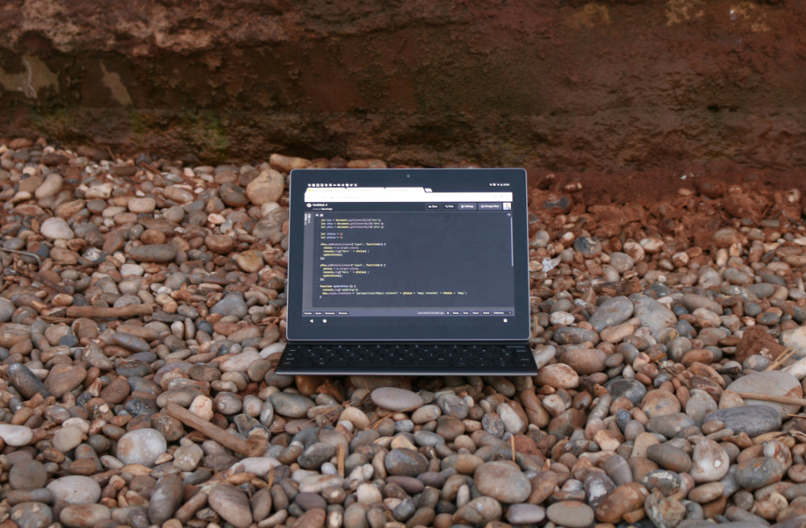

Chapter 2 Essential Setup

Install three tools and you’re ready to go:
- Git - Save and sync your website
- Hugo (and Go) - Build your website
- Editor - Edit your content
2.1 Step 1: Install Git
2.1.2 Windows
Download and install from git-scm.com
Important: During installation, select “Git Bash” for command line access.
2.2 Step 2: Install Go
Hugo requires Go for modules and certain features. Install the latest version.
2.2.2 Windows
Download and install from golang.org/dl - get the latest version.
2.3 Step 3: Install Hugo Extended
Hugo builds your website. You need the extended version.
⚠️ Important: The Hugo version must match your template’s requirements.
2.3.1 Step 3.1: Check Required Hugo Version
Before installing Hugo, check the version required by the Academic CV template:
- Visit the template repository: Hugo Blox Academic CV
- Open the
netlify.tomlfile in the repository - Look for the line:
HUGO_VERSION = "0.xxx.x" - Note this version number - you’ll install this exact version
💡 Why this matters: Hugo Blox templates are tested with specific Hugo versions. Using a different version may cause build errors or missing features.
2.3.2 Step 3.2: Install the Correct Hugo Version
Replace 0.xxx.x below with the version from netlify.toml:
2.3.4 Windows
Using Chocolatey (install Chocolatey first from chocolatey.org):
Or download directly from Hugo releases - get the “extended” version matching your template’s requirements.
2.3.6 Verify Hugo and Go Installation
Before proceeding, make sure both Hugo and Go are accessible in your terminal:
# Check Hugo is found and working
hugo version
# Should show: hugo v0.xxx.x+extended (matching your template's version)
# Check Go is found and working
go version
# Should show: go version go1.21.x or newerImportant: Hugo version must match your template’s requirements AND include “extended” in the output.
If either command fails (“command not found”):
First, restart your terminal (close and reopen terminal window)
Check if tools are installed but not in PATH:
# Find where Hugo is installed
which hugo
# Or try: whereis hugo (Linux) or where hugo (Windows)
# Find where Go is installed
which go
# Or try: whereis go (Linux) or where go (Windows)- If tools are found, add to PATH:
macOS/Linux - Add these lines to your shell config file:
# For Bash users (edit ~/.bashrc or ~/.bash_profile)
echo 'export PATH="/usr/local/bin:$PATH"' >> ~/.bashrc
# For Zsh users (edit ~/.zshrc)
echo 'export PATH="/usr/local/bin:$PATH"' >> ~/.zshrc
# If you installed with Homebrew
echo 'export PATH="/opt/homebrew/bin:$PATH"' >> ~/.zshrc
# Then reload your shell
source ~/.bashrc # or source ~/.zshrcWindows
- Add to system PATH:
- Search “Environment Variables” in Start menu
- Click “Environment Variables”
- Find “Path” in System Variables
- Add the folder containing
hugo.exeandgo.exe
- Still not working? Re-run the installation steps above
2.4 Step 4: Choose Your Editor
2.4.1 VS Code (Recommended for Beginners)
- Free and feature-rich
- Excellent Markdown support
- Git integration
- Extensions for Hugo development
- GitHub Copilot available - provides AI code suggestions and explanations, but cannot edit files directly
- Download: code.visualstudio.com
Quick VS Code Setup:
If you chose VS Code, install these extensions:
- Open VS Code
- Click Extensions icon (squares in sidebar)
- Install: “Hugo Language and Syntax Support”
- Install: “Markdown All in One”
2.4.2 Cursor AI (AI-Powered Coding)
- VS Code fork with AI assistance
- Built-in AI code completion and chat
- Excels at direct file editing - AI can modify your files directly through natural language commands
- Excellent for learning and productivity
- Hugo and Markdown support
- Free tier available - 2000 completions and 50 slow premium requests per month (resets every 30 days - usable for free indefinitely), then $20/month for unlimited usage
- Download: cursor.sh
Setup: Same extensions as VS Code (Hugo Language and Syntax Support, Markdown All in One)
2.4.3 RStudio (If You Use R)
- Excellent for R Markdown integration
- Good Markdown support
- Built-in Git interface
- Completely free for individual use
- Download: rstudio.com
2.5 Step 5: Git Configuration & Authentication
2.5.2 GitHub Account Setup
First, create your GitHub account (if you don’t have one):
- Go to github.com
- Sign up for a free account
- Choose a username (this will be part of your website URL)
2.5.3 GitHub Authentication (Required)
GitHub requires a Personal Access Token (PAT) instead of passwords for Git operations.
Create your PAT: https://github.com/settings/tokens
💡 Note: If you choose the R approach below, usethis::create_github_token() will open this page for you automatically.
2.5.4 macOS Authentication Setup
Option 1: R + RStudio + usethis + gitcreds
Best for R users:
# In R or RStudio:
install.packages(c("usethis", "gitcreds"))
usethis::create_github_token() # Opens browser to create PAT
gitcreds::gitcreds_set() # Enter your PAT when promptedOption 2: Git CLI + macOS Keychain
Best for command-line Git users:
📌 This ensures your PAT is stored in the macOS Keychain and reused silently.
When you clone or push, you’ll be asked for:
- Username:
your_github_username - Password:
your_PAT_here
✅ Git will remember the token after this — no need to reenter.
2.5.5 Windows Authentication Setup
Option 1: R + RStudio + usethis + gitcreds
Best for R users — identical process as on macOS:
# In R or RStudio:
install.packages(c("usethis", "gitcreds"))
usethis::create_github_token() # Opens browser to create PAT
gitcreds::gitcreds_set() # Enter your PAT when promptedOption 2: Git CLI + Windows Credential Manager
Best for command-line Git users:
💡 This tells Git to use Git Credential Manager (GCM), which stores credentials securely in Windows Credential Manager.
When you clone or push, you’ll be asked for:
- Username:
your_github_username
- Password:
your_PAT_here
✅ Git will remember the token after this — no need to reenter.
2.6 Ready!
You now have everything needed to build your academic website.
What you have:
✅ Git - configured with GitHub authentication
✅ Go - required for Hugo modules and features
✅ Hugo Extended - for building your site (version-matched to template)
✅ Text Editor - for editing content
Next Chapter Preview: Clone the academic template and start customizing!